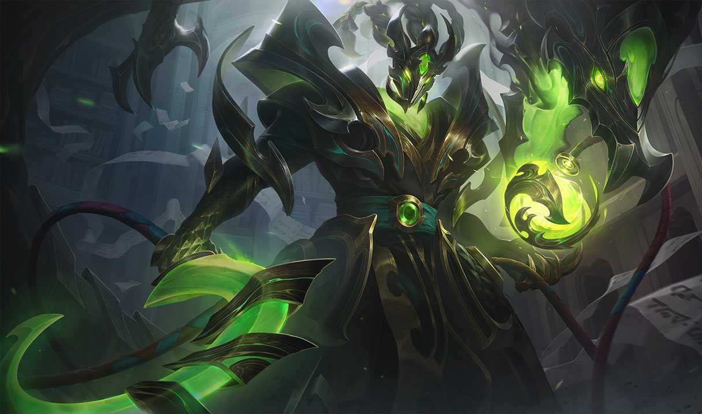
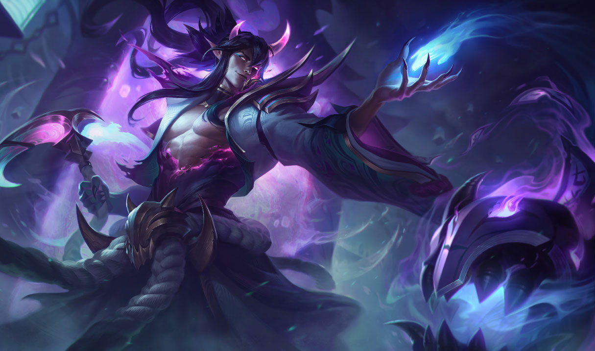

Thresh, O Carcereiro Cruel

Thresh Dragão de Aço
Skin com temática de dragões, possui uma paleta
de cores de um tom de verde mais claro
que a arte
original do Thresh, e prata, parece
que a idéia foi
deixar Thresh com uma armadura dracônica

Thresh Florescer Espiritual
Skin com temática do Florescer Espiritual,
possuí uma paleta de cores do branco ao roxo,
remetendo a espíritos, ou o além, e magia

Thresh Velho Oeste
Skin com temática de velho oeste com demônios,
possuí uma paleta de cores do preto ao
laranja,
remetendo a deserto e fogo